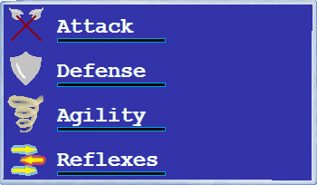
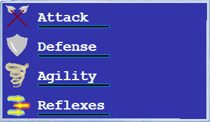

But most importantly, he appears to be a small boar. And his trusty friend and steed is a phlegmatic rat by the name of Sallinger.
The world they dwelled in was very unusual. To the point that there was barely any concept of money/goods relationship developed. Instead creatures native to this world had a clear sense of "karma".
It would take a few books to explain what karma means for this world. Suffice it to say that it's the essence of free will and the instrument of choice. It is in everything one does, and it is the key to fulfilling one's desires.
There is nothing wrong with wanting to get rich with karma, now is it? Especially when there is no easy way about it. Or is there?
And so Dominique wishes to choose the destiny of a hero - a typical desire for someone like him. But such a path is not easily attained. And for this reason he leaves his home of Hogville and sets out on a journey to perform a feat worthy of earning him the title of "hero".
As he arrives to a mysterious land, he looks around to find those in need. Guide Dominique on his quest for justice and karma!
Navigate the landscape, fight enemies for experience and visit different places for special effects.
W, S or arrows up and down - move farther/nearer; choose a menu item. Moving between paths consumes stamina, so choose your path carefully.
Space or Enter - confirm/action.
Press ACTION to start your joruney.